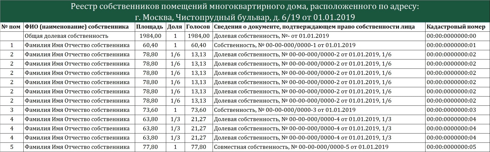

Не получайте штраф в размере 200 000 рублей – лучше закажите реестр собственников! Это обойдется гораздо дешевле. Подробнее в разделе О РЕЕСТРЕ
| Лицензионное требование |
Содержание |
Последствия несоблюдения |
| Обязанность вести реестр собственников жилья |
УК обязаны вести реестр собственников помещений в МКД и предоставлять его в течение 5 дней по запросу собственников (в случае инициирования собрания) |
Штраф от 200 000 руб. в соответствии с положениями ч.2 ст.14.1.3 КоАП РФ |
Образец реестра* собственников помещений в многоквартирном доме. *Примечание: здесь и далее данные видоизменены таким образом, чтобы не нарушать положения 152-ФЗ

Услуги*, связанные с реестром собственников помещений в многоквартирном доме (МКД). *Примечание: для всех регионов РФ, кроме Республики Крым
Мы работаем по полной предоплате заказа с заключением договора и предоставлением всех необходимых документов
Одиночные заказы и пакеты услуг:
- Выписка из ЕГРН, содержащая в себе сведения о характеристиках объекта недвижимости и зарегистрированных правах – 50 руб. за единицу
- Выписка из ЕГРН о переходе прав на объект недвижимости – 50 руб. за единицу
- Пакет услуг «Задаром»: при заказе реестра собственников Вы получаете возможность в течение года (до 31 декабря текущего года) обновить их один раз бесплатно
- Пакет услуг «Абонемент»: при заключении договора сроком от 2 до 5 лет на актуализацию (обновление) реестров (происходит ежегодно), стоимость работ по договору снижается (например, 2 года - 20% скидка, 5 лет – 50% скидка). Предусмотрен гибкий график оплаты
Заказывая больший объем услуг вы экономите на стоимости каждой из услуг, снижая общую стоимость договора
| Выписка на конкретное помещение |
50 руб |
| Подготовка реестра (количество помещений в МКД от 2 до 50) |
30 руб |
| Подготовка реестра (количество помещений в МКД от 50 до 500) |
25 руб./выписка |
| Подготовка реестра (количество помещений в МКД свыше 500) |
20 руб./выписка |
| При заказе на сумму от 50 000 руб.: |
| Подготовка (в электронном виде) заявления о вынесении судебного приказа в отношении должника |
3 экз. бесплатно |
| При заказе на сумму от 100 000 руб. (на выбор): |
| Подготовка (в электронном виде) заявления о вынесении судебного приказа в отношении должника |
8 экз. бесплатно |
| Подготовка пакета документов в электронном виде для общего собрания, включающая формирование повестки дня, заполнение бюллетеней голосования данными из реестра и подсчет бюллетеней голосования |
1 общее собрание |
| При заказе на сумму от 200 000 руб. (на выбор, возможны иные варианты): |
| Подготовка (в электронном виде) заявления о вынесении судебного приказа в отношении должника |
20 экз. бесплатно |
| Подготовка пакета документов в электронном виде для общего собрания, включающая формирование повестки дня, заполнение бюллетеней голосования данными из реестра и подсчет бюллетеней голосования |
3 общих собрания |
Правовое обеспечение (взаимодействие со всеми регионами РФ)
| Подготовка пакета документов в электронном виде для проведения ОСС в МКД (общего собрания собственников помещений в многоквартирном доме), а также последующая обработка сканов документов с целью подсчета кворума |
для домов менее 100 помещений – 15 000 руб.
для домов от 50 до 500 помещений – 20 000 руб.
для домов от 500 до 1000 помещений – 25 000 руб.
для домов свыше 1000 помещений – по договоренности
В стоимость ВХОДИТ готовый реестр собственников помещений |
| Подготовка (в электронном виде) заявления о вынесении судебного приказа в отношении должника |
2 000 руб. В стоимость входят технические работы, определение подсудности, правильное составление заявления. По результатам Заказчику направляется файл Microsoft Word с расширением .docx (по желанию может быть изменено на .doc) |
| Подготовка пакета документов для регистрации ТСН (ТСЖ) или Управляющей компании |
10 000 руб. Риски за отказ возлагаются на Исполнителя (на нас). Документы предоставляются Заказчику в электронном виде. С Исполнителя снимается ответственность, если отказ в регистрации будет получен по вине Заказчика |
| Подготовка и заполнение формы для получения «пустой» лицензии для вновь создаваемых Управляющих компаний. Документы предоставляются Заказчику в электронном виде |
3 000 руб |
| Подготовка типовых ходатайств и иных процессуальных документов (подготовка исковых заявлений, отзывов и возражений не подразумевается) |
3 000 руб |
Правовое обеспечение по Воронежской области
| Подготовка пакета документов в электронном виде для проведения ОСС в МКД (общего собрания собственников помещений в многоквартирном доме), а также последующая обработка сканов документов с целью подсчета кворума |
для домов менее 100 помещений – 15 000 руб.
для домов от 50 до 500 помещений – 20 000 руб.
для домов от 500 до 1000 помещений – 25 000 руб.
для домов свыше 1000 помещений – по договоренности
В стоимость ВХОДИТ готовый реестр собственников помещений |
| Получение судебного приказа в отношении должника, включает в себя работу на всех этапах |
3 000 руб |
| Подготовка пакета документов для регистрации ТСН (ТСЖ) или Управляющей компании |
10 000 руб. Риски за отказ возлагаются на Исполнителя (на нас) |
| Подготовка и заполнение формы для получения «пустой» лицензии для вновь создаваемых Управляющих компаний |
3 000 руб |
| Подготовка и правовой анализ договоров |
от 5 000 руб. для типовых, далее цена варьируется от сложности
от 15 000 для договоров между РСО и УК, с учетом подготовки протокола разногласий |
| Представительство в судах общей юрисдикции по типовым ситуациям ЖКХ |
от 6 000 руб |
| Представительство в судах общей юрисдикции по делам, связанным с ущербом (залитие, сход наледи/падение снега) и т.д |
% от дела (по договоренности, индивидуальные условия ведения дела) |
| Представительство в судах по делам с застройщиками, связанными с наличием строительных недостатков в квартирах и/или домах |
% от дела (по договоренности, индивидуальные условия ведения дела) |
| Представительство в Арбитражном суде Воронежской области |
от 50 000 руб. за процесс* (участие в суде апелляционной и кассационной инстанции оплачивается отдельно)
*прим.: в зависимости от дела, в некоторых случаях – за % от дела (по договоренности, индивидуальные условия ведения дела) |
| Подготовка типовых ходатайств и иных процессуальных документов (подготовка исковых заявлений, отзывов и возражений не подразумевается) |
3 000 руб |
Что такое реестр дома и для чего он нужен?
Реестр дома (реестр собственников помещений в многоквартирном доме) - документ, содержащий:
- сведения о собственниках всех помещений в многоквартирном доме с указанием ФИО (или наименование и ОГНР для юрлиц) собственников;
- номера квартир/помещений;
- реквизиты документов, подтверждающих право собственности на указанные помещения;
- сведения о форме собственности и площади каждого помещения в многоквартирном доме;
- размер доли в праве собственности на такие помещения, принадлежащей каждому из их собственников.
Управляющие компании, ТСН (ТСЖ) и жилищные кооперативы обязаны вести реестр собственников помещений в многоквартирном доме (МКД). который является обязательным приложением к Протоколу.
Указанное положение закреплено ч.3.1. ст.45 ЖК РФ, и пп.А п.20 Приложения №1 к приказу Министерства строительства и жилищно-коммунального хозяйства Российской Федерации от 28 января 2019 г. N 44/пр.
Реестр дома (реестр собственников помещений в многоквартирном доме) необходим для проведения очередного или внеочередного общего собрания собственников помещений в многоквартирном доме (ОСС в МКД).
Основные причины проведения общего собрания собственников:
- Смена формы управления
- Смена управляющей организации
- Повышение или понижение тарифа на содержание и ремонт жилья
- Определение УК или ТСЖ владельцем специального счета капитального ремонта
- Определение размера взноса на капитальный ремонт
- Расчеты с ресурсоснабжающими организациями – по нормативу или по показаниям ОДПУ (общедомового прибора учета)
- Капитальный ремонт и реконструкция МКД
- Пользование общим имуществом, в т.ч. установка систем видеонаблюдения, домофонов и т.д.
- Пользование земельным участком
Примечание: по независящим от нас причинам мы не работаем с информацией о недвижимом имуществе, расположенном в Республике Крым
| Вопросы |
Ответы |
| 1 |
В какой срок вы подготовите реестр собственников помещений и выписки из ЕГРН? |
от 1 до 3 рабочих дней с момента оплаты (при условии стабильной работоспособности сервера Росреестра). В ином случае уведомляем о форс-мажоре |
| 2 |
В каком формате предоставляется реестр собственников помещений дома и что к нему прилагается? |
Реестр собственников помещений дома предоставляется в формате документа Microsoft Excel (.xlsx или .xls). Вам направляется архив, содержащий реестр и все выписки на имеющиеся в реестре помещения |
| 3 |
В каком формате предоставляется выписка? |
Выписка предоставляется в электронном виде в формате Документа XML (.xml) |
| 4 |
Насколько действительна такая выписка? |
Выписка действительна, она располагает реквизитами о получателе выписки, а также дате запроса и номере такого запроса. Более того, в архиве к каждой выписке прилагается электронная подпись (электронно-цифровая подпись Росреестра (ЭЦП). Проверить такую подпись можно на сайте росреестра или на сайте госуслуг |
| 5 |
Насколько актуальны сведения в выписке и реестре? |
Сведения актуальны на дату запроса, т.е. если запрос сделан сегодня – сведения будут актуальны на сегодняшний день, если запрос будет сделан 20.10.2025 – сведения будут актуальны на 20.10.2025 |
| 6 |
Можно ли использовать такие выписки из ЕГРН в качестве доказательств в суде (в т.ч. по делам об оспаривании протокола общего собрания)? |
Нужно! Такая выписка из ЕГРН позволит доказать реальную площадь помещения, принадлежащего собственнику. Электронная выписка, подтвержденная электронно-цифровой подписью Росреестра, согласно статьи 6 Федерального Закона (63-ФЗ) «Об электронной подписи» признается электронным документом, равнозначным документу на бумажном носителе, подписанному собственноручной подписью, и может применяться в любых правоотношениях в соответствии с законодательством Российской Федерации |
| 7 |
Можно ли проводить ОСС в МКД (общее собрание собственников в многоквартирном доме) используя полученный реестр и выписки? |
Можно. Собственно, именно для этого и существует наш сервис. Реестр является обязательным приложением к протоколу общего собрания, а выписки подтверждают сведения, содержащиеся в реестре |
| 8 |
Можно ли заполнять бюллетени голосования данными, полученными из выписок, в т.ч. сведения о правоустанавливающих документах указывать следующего вида: выписка из ЕГРН, собственность 5z:22:1010101:4zz-5z/0zz/2018-1 от 06.02.2018 ? |
Да, можно. Совет: в случае оспаривания решений ОСС, оформленных протоколами, выписки должны быть приложены к реестру. Не всегда, но отсутствие таких выписок влечет признание протокола недействительным (такая практика существует по разным регионам РФ), поэтому выписки лучше прикладывать |
| 9 |
Может ли быть так, что в Росреестре отсутствуют сведения о праве собственности на какое-либо имущество? |
Да, так, к сожалению, может быть. На некоторые объекты недвижимости Росреестр не располагает сведениями о правообладателе |
| 10 |
Почему в вашем реестре нет данных о правообладателе нескольких помещений? |
Возможно потому, что такими данными не располагает Росреестр. К примеру, помещение может быть ведомственное (недвижимость, принадлежащая Вооруженным силам РФ) или не принадлежать никому (признано выморочным и так далее). Бывает и так, что сведения просто не успели обновиться и информация «подвисла» на какой-то стадии. Однако, помещений, о которых отсутствует информация – крайне мало. См. вопрос №8 |
«Кадры решают всё» – пожалуй, эта фраза известна всем. На примере нашей компании Вам станет очевидна разница между случайными людьми и специалистами в сфере ЖКХ, которая «узкая, но глубокая». Мы акцентируем Ваше внимание на качестве оказываемых нами услуг, сроках и отношении к Заказчикам.
Работая с нами – Вы отдыхаете. Практически всю работу и ответственность мы берем на себя.
5 причин заказать реестр через наш сервис:
| 1 |
Надежность |
Мы – ООО (общество с ограниченной ответственностью), работаем официально, с подготовкой всех необходимых документов, что подразумевает не только права, но и обязанности |
| 2 |
Скорость |
Реестр будет готов менее, чем за 48 часов. Исключение – нестабильная работа самого Росреестра |
| 3 |
Стоимость |
Стоимость одной выписки в Росреестре – 400 рублей. Сравните с нашими ценами |
| 4 |
Трудозатраты |
Мы предоставляем реестр с выписками. Вам не придется стоять в очереди в МФЦ или искать нужную информацию на сайте Росреестра. Вы можете заниматься своими делами, а мы подготовим для Вас все необходимые документы. При необходимости – подготовим все документы для общего собрания, а потом посчитаем кворум, который Вы собрали |
| 5 |
Конфиденциальность |
Выписки заказываем мы, Ваши персональные данные нигде не раскрываются (в договоре предусмотрен раздел 5 – «Соглашение о конфиденциальности») |
Наша компания – команда профессионалов на рынке ЖКХ. Наши юристы имеют практический опыт работы более 8 лет, заработали положительную репутацию и имя в г. Воронеже. Нам не только понятна специфика работы, но известны многие подводные камни.
Приглашаем Вас к сотрудничеству!
ООО «РД» (общество с ограниченной ответственностью «Реестр дома»)
Адрес: 394068, Воронежская обл., г.Воронеж, ул.Беговая, д.10, корп.2, кв.64
Электронная почта: info@rd36.ru
Телефон: 8-996-450-00-36
ИНН/КПП: 3662275965 / 366201001
ОГРН: 1193668021304
Наименование банка: ПАО Сбербанк
Р/с: 40702810213000033636
К/с: 30101810600000000681
БИК: 042007681
Наш сайт временно работает в режиме ограниченной функциональности, мы работаем над тем, чтобы сделать его для Вас еще удобнее. Совсем скоро появится возможность онлайн-заказа и покупки